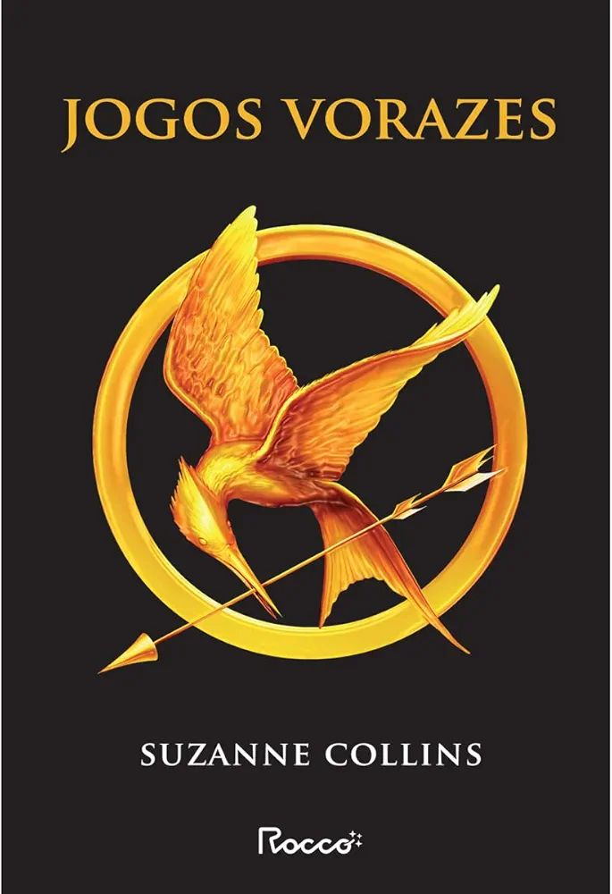
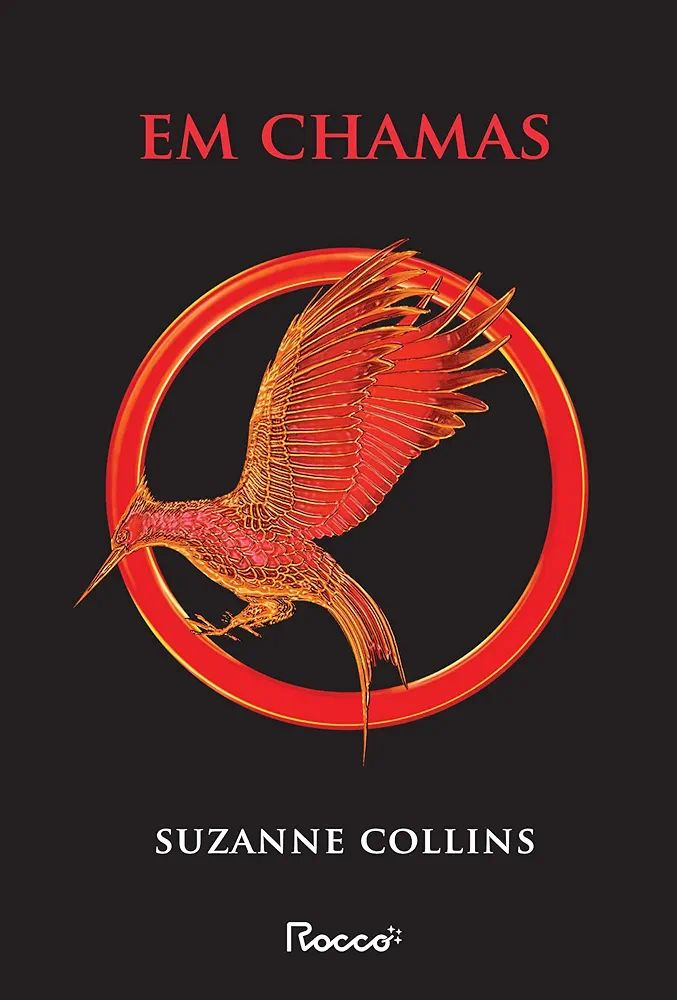
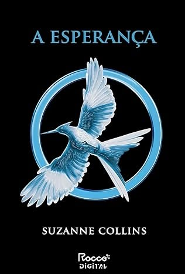
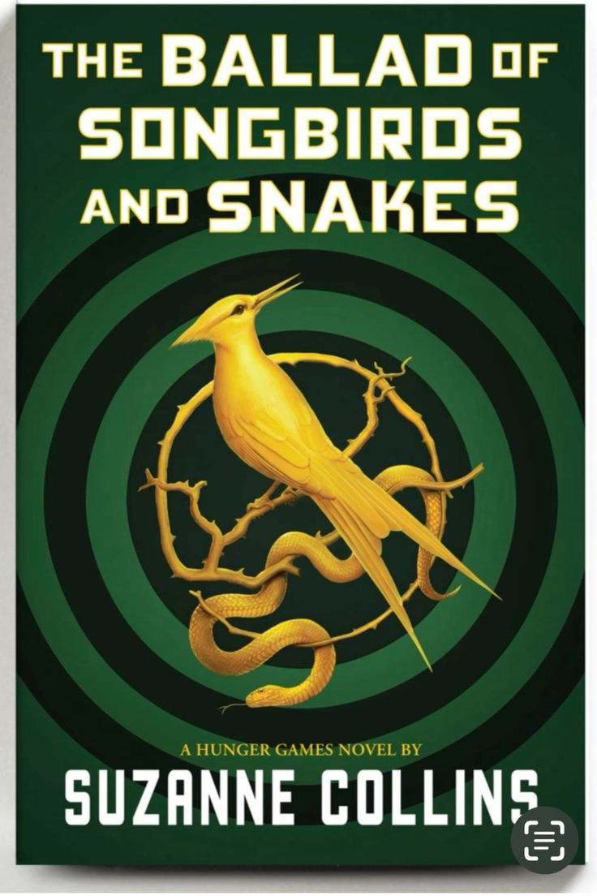
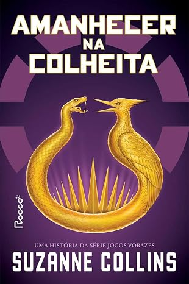

A história de Jogos Vorazes se passa em um futuro distópico, na nação de Panem,
que foi construída no território onde antes ficava a América do Norte.
após vencerem a 74ª edição dos Jogos Vorazes, Katniss Everdeen e Peeta Mellark tornam-se símbolos de esperança
para os distritos e despertam a ira do tirânico Presidente Snow,
pois a vitória de ambos desencadeou focos de rebelião contra a Capital.